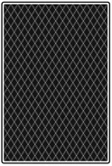

Game Ends When Everyone Has 13 Cards!
Player 1
Player 2

0 cards
0 cards
Draw
Shuffle
Ability
End Turn
Your browser does not support the audio element.
Your browser does not support the audio element.